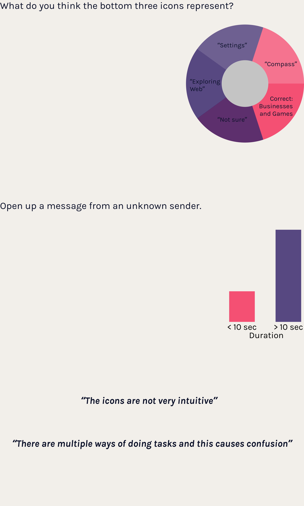

This project was started as a team project for a Usability and Information Architecture class at UCSD. After the completion of the project, I redesigned a couple other features of the application, based off the results from the user testing, and came up with a prototype encompassing all the redesigns.
UX Researcher, UX Designer
User Research, Competitive Analysis, Information Architecture, Prototyping, Testing, Wireframing, Figma
Dec 2019 (3 weeks)
Challenge
Deliverables
Background —
Research —
Findings and Trends—
Problems —
Competitive Analysis —
Instagram Direct Messaging
Snapchat
Apple iMessage
Sketches and Ideation —
Redesign —
Prototype —
I would like to take my prototype further by conducting more user tests to figure out the effectiveness of my redesigns. If I had more time, I would have conducted the user tests on a larger sample of users and on a more diverse pool of interviewees (non-students).
Thank you to my great teammates Sarah Cho and Tryphena Hu!